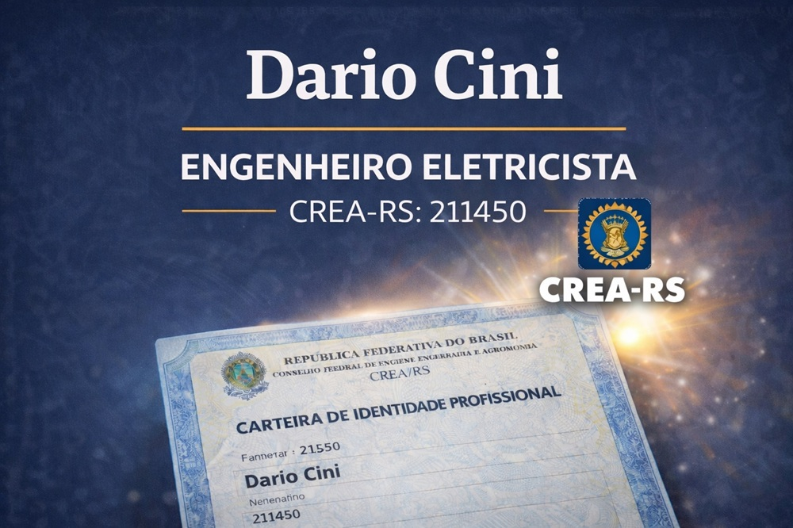
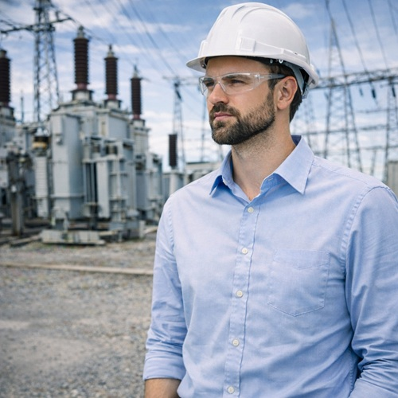

Engenheiro eletricista em São Leopoldo
Engenheiro eletricista Dario Cini — CREA RS 211.450
Projetos e laudos elétricos com inspeção técnica e ART.
Telefone: (51) 99961-3451
E-mail: contato@ciniengenharia.com.br

Engenheiro eletricista Dario Cini — CREA RS 211.450
Projetos e laudos elétricos com inspeção técnica e ART.
Telefone: (51) 99961-3451
E-mail: contato@ciniengenharia.com.br
A área de atendimento do engenheiro eletricista São Leopoldo abrange bairros inseridos em regiões urbanas com presença significativa de atividade industrial, acompanhando a distribuição territorial das indústrias metalmecânicas no município.
Centro, Rio dos Sinos e Scharlau.
Vicentina, Cristo Rei e Arroio da Manteiga.
Morro do Espelho, Padre Réus e Santos Dumont.
São José, Rio Branco e Morro do Espelho.
A proximidade com o eixo logístico da BR-116 e com áreas industriais consolidadas facilita o deslocamento técnico e permite respostas mais ágeis às demandas das empresas instaladas no município.
Atendimento presencial em São Leopoldo, com projetos e laudos assinados por engenheiro eletricista e ART registrada no CREA.
Em São Leopoldo, é indicado contratar um engenheiro eletricista quando a integração urbano-industrial da cidade gera adaptações em ambientes ligados ao polo metalmecânico regional.
Situações comuns incluem:
Nesses cenários, o acompanhamento profissional assegura que as instalações elétricas acompanhem a atividade industrial com segurança e confiabilidade.
Dario Cini, engenheiro eletricista formado pela Universidade de Caxias do Sul, com mais de 10 anos de experiência no segmento da engenharia elétrica em São Leopoldo e região metropolitana de Porto Alegre.
CREA: RS 211.450 — consulta pública no CREA-RS
Cini Engenharia — CNPJ 25.268.313/0001-56 — Consultar CNPJ
LinkedIn: Dario Cini — Ver perfil

Em São Leopoldo, a ART funciona como garantia de responsabilidade profissional em atividades de engenharia elétrica, pois vincula formalmente o serviço a um engenheiro habilitado. Esse registro assegura que a intervenção possui autoria técnica definida.
A ART garante:
Com a emissão da ART, os serviços de engenharia elétrica no município passam a ter responsabilidade profissional garantida.

A responsabilidade técnica e a emissão de ART envolvem a atuação do engenheiro eletricista na formalização das atividades realizadas e na garantia de rastreabilidade dos serviços. A ART comprova a habilitação profissional, assegura conformidade com normas técnicas e oferece segurança jurídica às partes envolvidas.
Esse procedimento é essencial para validar projetos, laudos e execuções, reforçando o compromisso com qualidade e segurança. Essa atuação exige rigor técnico, ética profissional e responsabilidade na condução dos serviços.
O correto preenchimento dos registros, a vinculação das atividades executadas às respectivas atribuições profissionais e o controle da documentação técnica permitem maior transparência na prestação dos serviços e facilitam processos de auditoria e fiscalização. Esse acompanhamento contribui para a organização das informações, para a confiabilidade dos documentos emitidos e para a manutenção da conformidade técnica ao longo de todas as etapas do trabalho.

Você não precisa conhecer termos técnicos. Basta descrever ao profissional o que está acontecendo ou o que você precisa — seja uma dúvida sobre segurança, um laudo, uma exigência legal ou uma melhoria na instalação. O engenheiro irá identificar o serviço adequado.
Busque um engenheiro ou empresa de engenharia com registro ativo no CREA. Isso garante que o profissional está legalmente habilitado para assumir responsabilidade técnica pelo serviço.
Após o primeiro contato, peça uma proposta detalhando o que será executado, o prazo e o valor. Aproveite esse momento para esclarecer dúvidas e entender como o serviço será realizado.
Confirme prazos, etapas do trabalho e o que será entregue ao final. Uma comunicação clara evita mal-entendidos durante a execução.
A contratação deve ser registrada por meio de proposta ou contrato. Nesse momento, o engenheiro assume a responsabilidade técnica e inicia o trabalho com foco em segurança, conformidade normativa e qualidade técnica.

A realidade técnica de São Leopoldo é marcada pela forte presença de indústrias tecnológicas, centros logísticos e estruturas corporativas que dependem de fornecimento contínuo de energia para manter seus processos em funcionamento. A proximidade com o eixo metropolitano e a concentração de empresas no ambiente do Tecnosinos criam um cenário onde a qualidade do sistema de alimentação influencia diretamente a confiabilidade de servidores, linhas automatizadas e unidades produtivas com alto nível de integração digital.
A análise das instalações revela a necessidade de coordenação entre painéis de distribuição, sistemas de proteção e fontes de energia ininterrupta, especialmente em operações que não admitem paradas. Ambientes com equipamentos sensíveis exigem controle rigoroso de quedas de tensão, harmônicas e aquecimento em conexões, fatores que impactam o desempenho e a durabilidade dos componentes. A leitura técnica desses pontos permite identificar antecipadamente condições de risco e propor soluções que mantenham a estabilidade operacional.
O crescimento urbano e a requalificação de áreas industriais também ampliam a demanda por infraestrutura energética adequada, exigindo planejamento para expansões, modernizações e aumento de carga. Nesse contexto, o conhecimento aplicado se traduz em continuidade produtiva, segurança nas intervenções e eficiência no uso da energia, acompanhando a evolução econômica e tecnológica característica do município.
São Leopoldo é atendida pela RGE, que tem sede no município. A cidade abriga a Unisinos e o Tecnosinos, um dos primeiros parques tecnológicos do país, com cerca de 80 empresas em áreas como semicondutores, automação e energia, além da ACIST-SL, entidade empresarial fundada em 1920. Abaixo, a concessionária, as entidades técnicas e os órgãos públicos da cidade.
RGE — sede em São Leopoldo | Agência RGE São Leopoldo | Tecnosinos — Parque Tecnológico de São Leopoldo | ACIST-SL — Associação Comercial, Industrial, de Serviços e Tecnologia de São Leopoldo | Unisinos | Prefeitura de São Leopoldo
1. COMO A ATUAÇÃO DE UM ENGENHEIRO ELETRICISTA EM SÃO LEOPOLDO INFLUENCIA O DESEMPENHO DE INSTALAÇÕES INDUSTRIAIS?
A atuação técnica garante que a infraestrutura elétrica opere de forma estável e previsível, o que sustenta a continuidade produtiva. Em um ambiente industrial, a qualidade do sistema elétrico impacta diretamente a eficiência operacional e a confiabilidade dos processos.
2. QUAIS FATORES DETERMINAM A QUALIDADE DE UM SISTEMA ELÉTRICO INDUSTRIAL?
A qualidade depende do dimensionamento adequado, da organização da distribuição de energia e da capacidade do sistema de responder a variações de carga. Esses fatores asseguram funcionamento consistente e reduzem riscos operacionais.
3. POR QUE O PLANEJAMENTO ELÉTRICO É ESTRATÉGICO PARA AMBIENTES PRODUTIVOS?
O planejamento permite que a instalação acompanhe o crescimento das demandas sem comprometer estabilidade. Um sistema bem estruturado facilita adaptações futuras e melhora a gestão técnica do ambiente.
4. COMO A PREVISIBILIDADE ELÉTRICA CONTRIBUI PARA A ROTINA INDUSTRIAL?
Sistemas previsíveis reduzem interrupções inesperadas e permitem maior controle operacional. Isso melhora a tomada de decisão técnica e a organização dos processos produtivos.
5. DE QUE FORMA A ENGENHARIA ELÉTRICA IMPACTA A ORGANIZAÇÃO DE UMA INSTALAÇÃO?
Uma infraestrutura bem organizada facilita intervenções técnicas, otimiza fluxos operacionais e aumenta a eficiência das atividades relacionadas ao sistema elétrico.
6. COMO A ANÁLISE DE DESEMPENHO ELÉTRICO ORIENTA MELHORIAS TÉCNICAS?
A análise revela padrões de funcionamento e possíveis limitações do sistema, fornecendo base objetiva para decisões de aprimoramento.
7. POR QUE É IMPORTANTE PROJETAR SISTEMAS ELÉTRICOS COM VISÃO DE LONGO PRAZO?
Projetos com perspectiva futura permitem incorporar novas tecnologias e adaptar a instalação a mudanças operacionais sem comprometer a estrutura existente.